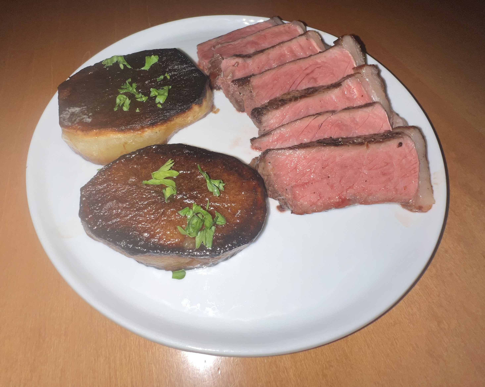

Member of Technical Staff at Simile
I am curious about decision-making: why do people make the decisions that they do, can we train models that mimic or understand human behavior, and how can we build systems that help people make good decisions?
At Simile, I work on training, evaluating, and serving our language models. There are a variety of problems that these models solve: we simulate human-like speech from a diverse set of plausible viewpoints, we predict what behaviors different sets of people will do in a certain scenario, and we orchestrate large amounts of these individual simulations and predictions into an observable parallel universe. I am very grateful to be mentored by Percy Liang, Michael Bernstein, and Joon Sung Park.
